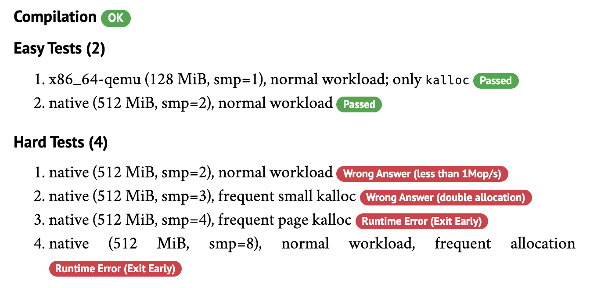

本讲概述
同步、互斥的时候我们已经讲了很多 “不对” 的案例
- 哲 ♂ 学家死锁
- join 同步失败死循环
- 条件变量 signal 错线程
不要笑！犯错误的就是你们自己！
- 并发 bugs 怎么办？
本讲内容
- 调试理论 (fault, error, failure)
- 并发 bugs: 死锁 (AA/ABBA), 原子性违反 (ABA), (顺序违反) BA
- Lab1 生存指南
调试理论：复习
基本原则
在《计算机系统基础》实验中提出
在《操作系统》课程中依然成立
- 机器永远是对的
(ICS) 不管是 crash 了，图形显示不正常了，还是
HIT BAD TRAP了，最后都是你自己背锅(OS) 不管是卡死、异常还是虚拟机重启，都是你自己的 bug
- 未测代码永远是错的
(ICS/OS) 你以为最不可能出 bug 的地方，往往 bug 就在那躺着
调试理论 (1)
程序是 “计算” (需求/规约的计算机实现) 的抽象
- CPU 实际执行 C 程序 (翻译成的指令序列)
- NEMU 模拟执行 C 程序 (翻译成的指令序列)
- 操作系统：
- 管理多个寄存器现场/执行流 (C 程序) 的并发执行
- 实现具体的系统调用 (open, read, mmap, ...)
程序中的 bug 是程序与设计/意图违反之处
- debug 就是定位到程序中 bug 的过程
为什么 Debug 那么困难？
因为 bug 的触发经历了漫长的过程
- Fault (bug) → Error (程序状态错) → Failure (可观测的结果错)
- 我们只能观测到 failure
- 我们可以检查状态的正确性 (但非常费时)
- 无法预知 bug 在哪里 (每一行 “看起来” 都挺对的)

程序 = 状态机
调试理论 (2)
调试理论：如果我们能判定任意程序状态的正确性，那么给定一个 failure，我们可以通过二分查找定位到第一个 error 的状态，此时的代码就是 fault (bug)。
实际中的调试
状态机的执行可能很长，但我们只要标记出一些关键的状态，就能帮我们缩小排查问题的范围
- 通过观察程序执行的轨迹 (trace)
- 缩小错误状态 (error) 可能产生的位置
- 从而定位到 bugs
- printf → 自定义 log 的 trace
- gdb → 指令/语句级 trace
调试理论给我们的启示
找到 bug 的两个关键链条
- Fault (bug) → Error (程序状态错)
- 我们需要更多的测试！
- 构造复杂的 workloads
- 我们需要更多的测试！
- Error (程序状态错) → Failure (可观测的结果错)
- 我们需要更多的检查！
- 可以随时开关的各类日志信息
- 各种防御性的 assertions
- 我们需要更多的检查！
福利：如何调试虚拟机重启？
调试理论告诉我们：failure point 很重要
- 可以追溯出一些 error states
- QEMU 设计者当然知道这一点
- 如果我们希望有什么，那一定会有的！
RTFM: QEMU Monitor
- 得到详尽的日志:
log int,cpu_reset,exec- fault → error → failure
int,cpu_reset- 帮助我们定位 failureexec- 帮助我们定位 error (执行流)- 甚至可以开发一个小工具，“绘制” 出程序执行的路径
- fault → error → failure
坠入并发的深渊……
并发 Bug 的调试理论
在无法 “准确复现一次执行” 的基础上，“找到第一个 error 的状态” 变难了……
调试理论当然成立，只要并发程序不是不确定的
- 并发 bug 每次触发方式都不太一样
- 跨线程的数据流 ……
Fault → error
- 每次的 error 都不一样
- 难以确定调试 “在什么时候停下来”
Error → failure
- 日志仍然能帮助我们缩小 error 发生的范围
- 但 failure 更难理解 (错误的输出/神秘异常/神秘重启/...)
并发 Bugs 到底长什么样？
一种研究流派：实证研究 (empirical study)
- 为了更好地解决并发 bugs 的问题
- 从现实数据集中 (随机) 选取一定比例的例子
- 对结论进行归纳总结
推荐阅读：
- S. Lu, et al. Learning from mistakes — A comprehensive study on real world concurrency bug characteristics. In Proc. of ASPLOS, 2008.
- 揭示了那些逃过了测试、流向了用户、最终被修复的 bugs 的特性
- Z. Yin, et al. How do fixes become bugs? A comprehensive characteristic study on incorrect fixes in commercial and open source operating systems. In Proc. of ESEC/FSE, 2011.
死锁 (Deadlock)
死锁 (Deadlock)
A deadlock is a state in which each member of a group is waiting for another member, including itself, to take action, such as sending a message or more commonly releasing a lock.
出现线程 “互相等待” 的情况 (路口空间 = 资源)

Empirical study: 在 105 个并发 bug 中 (non-deadlock/deadlock)
- MySQL (14/9), Apache (13/4), Mozilla (41/16), OpenOffice (6/2)
AA-Deadlock
假设你的 spinlock 不小心发生了中断
- 错误实现的 popcli
- 不应该发生的
_yield()
void os_run() { spin_lock(&list_lock); spin_lock(&xxx); spin_unlock(&xxx); // ---------+ } // | // | void on_interrupt() { // | spin_lock(&list_lock); // <--+ spin_unlock(&list_lock); }
ABBA-Deadlock
void obj_move(int i, int j) { spin_lock(&lock[i]); spin_lock(&lock[j]); arr[i] = NULL; arr[j] = arr[i]; spin_unlock(&lock[j]); spin_unlock(&lock[i]); }
上锁的顺序很重要……
obj_move本身看起来没有问题- 问题是它有一个隐含的 lock ordering 的 requirement
obj_move(1, 2);obj_move(2, 1)→ 死锁
避免死锁
死锁产生的四个必要条件 (Edward G. Coffman, 1971):
- 互斥：一个资源每次只能被一个进程使用
- 请求与保持：一个进程请求资阻塞时，不释放已获得的资源
- 不剥夺：进程已获得的资源不能强行剥夺
- 循环等待：若干进程之间形成头尾相接的循环等待资源关系
“理解了死锁的原因，尤其是产生死锁的四个必要条件，就可以最大可能地避免、预防和解除死锁。所以，在系统设计、进程调度等方面注意如何不让这四个必要条件成立，如何确定资源的合理分配算法，避免进程永久占据系统资源。此外，也要防止进程在处于等待状态的情况下占用资源。因此，对资源的分配要给予合理的规划。”
Bullshit.
- 破坏每一个条件都是 highly non-trivial 的 (请阅读教科书)
避免死锁 (cont'd)
AA-Deadlock
- AA 型的死锁容易检测，及早报告，及早修复
- spinlock.c
if (holding(lk)) panic();
ABBA-Deadlock
- 任意时刻系统中的锁都是有限的
- 严格按照固定的顺序获得所有锁 (lock ordering)
- 破坏了 “循环等待”
- 试一试：用状态机证明 是安全的
- “在任意时刻总是有一个线程 (获得 “最靠后” 锁的) 可以继续执行”
Lock Ordering: 应用
按照正确的顺序上锁很重要……
/* Lock ordering in mm: * inode->i_mutex (while writing or truncating, not reading or faulting) * mm->mmap_sem * page->flags PG_locked (lock_page) * hugetlbfs_i_mmap_rwsem_key (in huge_pmd_share) * mapping->i_mmap_rwsem * anon_vma->rwsem * mm->page_table_lock or pte_lock * pgdat->lru_lock (in mark_page_accessed, isolate_lru_page) * swap_lock (in swap_duplicate, swap_info_get) * mmlist_lock (in mmput, drain_mmlist and others) * mapping->private_lock (in __set_page_dirty_buffers) * mem_cgroup_{begin,end}_page_stat (memcg->move_lock) * i_pages lock (widely used) * inode->i_lock (in set_page_dirty's __mark_inode_dirty) * bdi.wb->list_lock (in set_page_dirty's __mark_inode_dirty) * sb_lock (within inode_lock in fs/fs-writeback.c) * i_pages lock (widely used, in set_page_dirty, * in arch-dependent flush_dcache_mmap_lock, * within bdi.wb->list_lock in __sync_single_inode) */
你大约察觉了……
Textbooks will tell you that if you always lock in the same order, you will never get this kind of deadlock. Practice will tell you that this approach doesn't scale: when I create a new lock, I don't understand enough of the kernel to figure out where in the 5000 lock hierarchy it will fit.
The best locks are encapsulated: they never get exposed in headers, and are never held around calls to non-trivial functions outside the same file. You can read through this code and see that it will never deadlock, because it never tries to grab another lock while it has that one. People using your code don't even need to know you are using a lock.
—— Unreliable Guide To Locking by Rusty Russell
让程序员彻底避免死锁？你想多了……
调试公理：未测代码永远是错的
- 并发那么复杂，程序员哪能充分测试啊……
lockdep: Kernel lock validator (since 2.6.17)
- 为每一个 “lock class” 检查 (分配一个 key)
- 每个静态锁都是一个 class：key = 地址
- 动态分配的锁，相同 initialization site 是同一个 class
- 在运行时观察所有的 lock/unlock
- lock/unlock 时记录所有可能的上锁顺序
- 线程先后获得 会记录
- 检查
- 是否存在 和 (deadlock)
- 即便死锁没有真正发生，但只要有 ABBA 的风险就会报告
- predictive analysis
- lock/unlock 时记录所有可能的上锁顺序
死锁：锁并不是唯一的原因
在涉及同步的时候，情况就复杂得多了……
- 老总打电话给秘书：“这几天我陪你去北京玩玩，你准备一下”
- 秘书打电话给老公：“这几天我要和老总去北京开会”
- 老公打电话给情人：“这几天我老婆不在家，陪我”
- 情人打电话给辅导学生：“这几天老师有事，停课”
- 学生打电话给爷爷：“这几天不上课，爷爷你陪我玩”
- 爷爷给秘书打电话：“北京去不了了，孙子要我陪”
- 秘书给老公打电话：“老总突然有事不去北京开会了”
- 老公给情人打电话：“老婆不走了，下次再说”
- 情人给辅导学生打电话：“这几天照常上课”
- 学生给爷爷打电话：“555 老师说这几天照常上课”
- 爷爷给秘书打电话：还是去北京吧，你准备准备
不要笑，你们的 L2 很有可能出现这种情况
并发 Bug：不仅是死锁
不上锁不就没有死锁了吗？
程序员：花式犯错
回顾我们实现并发控制的工具
- 互斥锁 (lock/unlock) - 原子性
- 条件变量 (wait/signal) - 同步
忘记上锁——原子性违反 (Atomicity Violation, AV)
忘记同步——顺序违反 (Order Violation, OV)
Empirical study: 在 105 个并发 bug 中 (non-deadlock/deadlock)
- MySQL (14/9), Apache (13/4), Mozilla (41/16), OpenOffice (6/2)
- 97% 的非死锁并发 bug 都是 AV 或 OV。
原子性违反 (AV)
“ABA”
- 我以为一段代码没啥事呢，但被人强势插入了

原子性违反 (cont'd)
有时候上锁也不解决问题
- “TOCTTOU” - time of check to time of use

顺序违反 (OV)
“BA”
- 怎么就没按我预想的顺序来呢？
- 例子：concurrent use after free

Empirical Study: 到底发现了什么？
程序员：我本地都跑了几万次了，没问题啊
- 一部署到生产环境里就 💥 爆炸了
我：在本地测的好好的啊
- 提交到 Online Judge 上连 easy tests 都过不了 (真实)
Empirical study 给了我们更多有趣的发现，指导 bug 的发现/修复：
- Almost all (96%) of the examined concurrency bugs are guaranteed to manifest if certain partial order between 2 threads is enforced.
- Many (66%) of the examined non-deadlock concurrency bugs’ manifestation involves concurrent accesses to only one variable.
- Almost all (97%) of the examined deadlock bugs involve two threads circularly waiting for at most two resources.
Lab 1 (PMM) 生存指南
Online Judge 体验极差
Lab 1 有一定难度
- 有一点轻微的并发 bug → Wrong Answer
- 用一把大锁吧，性能达不到 1Mop/s 的要求 (大部分分数到手)
- 目前 Accept 的同学，平均提交次数达到了惊人的 33.5 次
- (还是学习自觉性和基础都比较好的同学)

让调试理论来帮帮我们吧！
Fault → Error: 我们需要更多的测试用例！
想糊弄？糊弄不过去的。
来构造 kalloc 的 workload 吧！
void os_run() { while (1) { pmm->alloc(random_size()); // Insufficient: pmm->alloc(32); } }
创建合理的 Workload: kalloc
Online Judge 上的 workload:
- 为每一种分配大小 设置概率
- 频繁的小内存分配、频繁的大内存分配 (4 KiB)、混合的内存分配……
struct workload { int prob[N], sum; // sum = prob[0] + prob[1] + ... prob[N-1] // roll(0, sum-1) => allocation size }; static struct workload wl_typical = {.prob = {10,0,0, 40, 50, 40,30,20,10,4,2,1} }, wl_stress = {.prob = { 1,0,0,400,200,100, 1, 1, 1,1,1,1} }, wl_page = {.prob = {10,0,0, 1, 1, 1, 1, 1, 1,1,1,1} } ; static struct workload *workload = &wl_typical;
创建合理的 Workload: kfree
并发的 alloc-free 是很多问题的来源。
但同学们一定是懒得去测试的。—— jyy
Online Judge: 会把分配的结果保存到一个并发数据结构中
- 用 C11
stdatomic.h实现- 保证合法的 kalloc/kfree 序列 (没有 double-free 或 use-after-free)
- 但一个 CPU 的申请的内存可以在另一个 CPU free (RTFM)
想简单一点？
- 在 CPU 本地缓存本 CPU 的 allocation log (自旋锁保护)
- 隔一段时间进行 free
- 获取自旋锁 “偷取” 其他线程的日志
更多的测试用例：不仅是 Workload
基本想法: workload + 在适当的时候插入
delay()
- 这才是 Online Judge 测试的精髓
- allocation-biased/free-biased/mixed
ABBA (deadlock), ABA (AV), BA (OV) 都可以通过这种方式触发
- 如何聪明地插入 delay？
- 是个技术活
- K. Sen. Race directed random testing of concurrent programs. In Proc. of PLDI, 2008.
- D. Chen, et al. Testing multithreaded programs via thread speed control. In Proc. of ESEC/FSE, 2018.
- G. Li, et al. Efficient scalable thread-safety-violation detection: Finding thousands of concurrency bugs during testing. In Proc. SOSP, 2019.
- 是个技术活
Error → Failure: 我们需要更多的检查！
很多程序应该满足的 specification 并没有被检查
- C/C++ 为了性能考虑，就让 undefined behavior 发生
- 并不总是显现 “显著” 的后果
- 给你一种程序好像没问题的错觉
在程序中设计各种检查 (就像 spinlock.c 那样)
- double acquire, dangling release, 持有锁时开中断, 不配对的 unlock
小技巧
- 统计 cpu 的 spin count
- 如果超过某个明显不正常的数值就报告
getcallerpcs()记录的 PC 就有价值了- 一秒诊断死锁
更多的检查: Double-Allocation
内存分配要求：假设已分配的集合
- kalloc() 返回的 满足
- 如果实现了 thread-local allocation + 并发的 free，其实很容易弄错
void *wl_kalloc(size_t size) { u32 *arr = kalloc(size); if (arr) { for (int i = 0; (i + 1) * sizeof(u32) <= size) { panic_on(arr[i] == MAGIC, "double-allocation"); arr[i] = MAGIC; } } return arr; } void wl_kfree(void *ptr) { u32 *arr = ptr; for (int i = 0; (i + 1) * sizeof(u32) <= size) { // Compile Error panic_on(arr[i] == 0, "double-free"); arr[i] = 0; } kfree(ptr); }
更多的检查: Buffer Overrun
Canary (金丝雀) 对一氧化碳非常敏感
- 用生命预警矿井下的瓦斯泄露 (since 1911)

Canary
- “牺牲” 一些内存单元，来预警 memory bug 的发生
- (程序运行时没有动物受到实质的伤害)
Canary 的例子：保护内核栈
#define MAGIC 0x5a5aa5a5 typedef u32 canary_t[N]; struct kernel_stack { canary_t __c1; char data[4096 - sizeof(canary_t) * 2]; canary_t __c2; } __attribute__((packed)); void canary_init(canary_t *c) { for (int i = 0; i < N; i++) (*c)[i] = MAGIC; } void canary_check(canary_t *c, const char *msg) { for (int i = 0; i < N; i++) panic_on((*c)[i] != MAGIC, msg); } void kstack_check(struct kernel_stack *stk) { canary_check(&stk->__c1, "kernel stack overflow"); canary_check(&stk->__c2, "kernel stack underflow"); } void kstack_init(struct kernel_stack *stk) { canary_init(&stk->__c1); canary_init(&stk->__c2); }
烫烫烫和屯屯屯

msvc 中 debug mode 的 guard/fence/canary (MAGIC)
- 未初始化栈:
0xcccccccc - 未初始化堆:
0xcdcdcdcd - 对象头尾:
0xfdfdfdfd - 已回收内存:
0xdddddddd
python3
>>> (b'\xcc' * 80).decode('gb2312')
'烫烫烫烫烫烫烫烫烫烫烫烫烫烫烫烫烫烫烫烫烫烫烫烫烫烫烫烫烫烫烫烫烫烫烫烫烫烫烫烫'
>>> (b'\xcd' * 80).decode('gb2312')
'屯屯屯屯屯屯屯屯屯屯屯屯屯屯屯屯屯屯屯屯屯屯屯屯屯屯屯屯屯屯屯屯屯屯屯屯屯屯屯屯'
手持两把锟斤拷，口中疾呼烫烫烫
脚踏千朵屯屯屯，笑看万物锘锘锘
——不要笑啦，它们在无形中保护你！
(仿佛这些曾经可怕的形象高大了许多)
更多的检查: Sanitizers
“动态程序分析”
- 在程序运行时进行观测和检查
- 适当的时候对程序行为进行调控
常见的动态分析：检查某些 specification 是否被违反

- 可以把动态分析理解成两个部分
- 一个部分不断地在程序运行时打印日志
- lock, unlock, memory access, ...
- 另一个部分解析日志，查看有没有什么问题
- lockdep: 检查是否存在 ABBA
- 一个部分不断地在程序运行时打印日志
- 付出程序变慢的代价
- 但是非常值得 ← jyy 的主要研究方向，快来卖自己 (误
更多的检查: Sanitizers (cont'd)
前所未有的宝藏！！！
- 如果你不知道、没用过 lint 和 sanitizers，根本不能算会编程。
- AddressSanitizer (asan)
- 检查各种非法地址访问: buffer (heap/stack/global) overflow, use-after-free, use-after-return, double-free, memory leak (lsan)
- demo: uaf.c; kasan 现已加入 Linux 内核
- MemorySanitizer (msan)
- 检查未初始化的读取
- ThreadSanitizer (tsan)
- 检查是否存在数据竞争 (data race)
- UBSanitizer (ubsan)
- 检查是否存在各种看起来没问题的 undefined behavior: misaligned pointer, signed integer overflow, ...
Takeaways and Wrap-up
三种 “错误”：fault, error, and failure
- Fault → Error: 我们需要更多的测试用例！
- 构造更强的 workloads
- Error → Failure: 我们需要更多的检查！
- assertions, sanitizers, ...
三种并发 bugs
- 死锁 (AA/ABBA)、原子性违反 (ABA)、顺序违反 (BA)
复习题：
- 做好 Lab1 的测试框架
- 虽然大家可以硬来 (xjb 改程序直到 Online Judge 通过)
- 但总有一天大家会面对交付代码给客户的场景
- Further reading
- K. Serebryany, et al. AddressSanitizer: A fast address sanity checker. In Proc. of USENIX ATC, 2012.